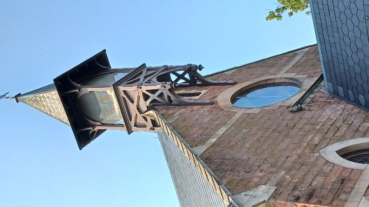
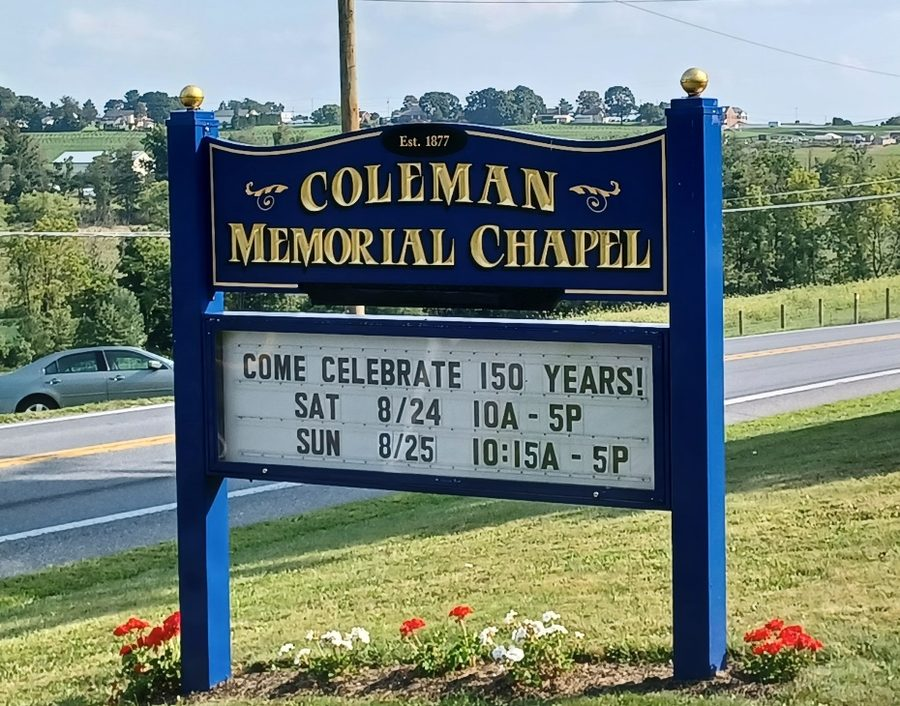
On Saturday and Sunday, August 24–25, 2024 Coleman Memorial Chapel in Brickerville celebrated its 150th anniversary with events on the grounds of the chapel on Saturday and additional events and tours of Elizabeth Furnace on Sunday.
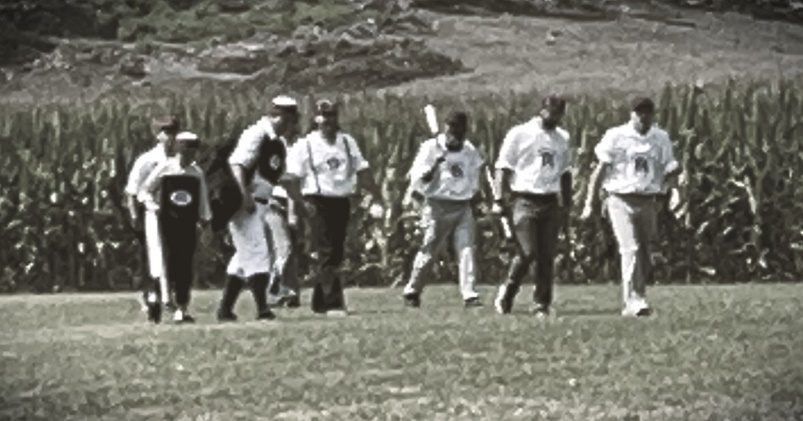
At 3pm Saturday church members and the public gathered in the chapel for a special worship service for the opening of the capsule that had been sealed in the church walls 150 years ago.
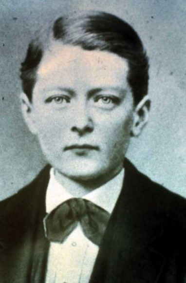
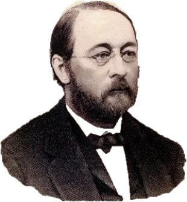
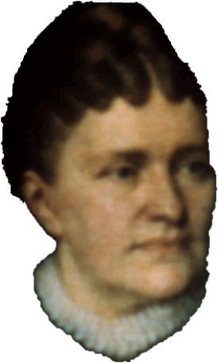
The cornerstone of the chapel had been laid on Wednesday, August 26th of 1874 to commemorate the tragic death of 14-year-old James Coleman, who fell from a horse on March 3rd, 1874. He was the eldest son of G. Dawson and Deborah Coleman. The chapel was completed two years later in 1877 and G. Dawson Coleman died the following year.
As reported at that time by Lebanon Daily News, the cornerstone contained an 8x12 inch leaden box, in which were placed coins, currency, copies of newspapers from Lebanon, New York, Philadelphia, and Boston. Additionally were photographs, including one of James Coleman (his photo above is a stock photo), lists of parishioners and a history of the Elizabeth Farms Sabbath school.
A Service of Remembrance and Celebration
The 1874 dedication service had included hymns, scripture readings and prayers. On this Sunday, the 3pm service repeated the same order, singing "Come Thou Almighty King," "Christ is Our Cornerstone," and "Glorious Things of Thee are Spoken." Ken Maurer, Council President, spoke words of welcome. Ralph Hirner appeared in costume, representing G. Dawson Coleman, and Sheila Kyle likewise as Deborah Coleman, offering the prayer. Hugh Benedict sang a solo, "Humble Heart," an old Shaker hymn.
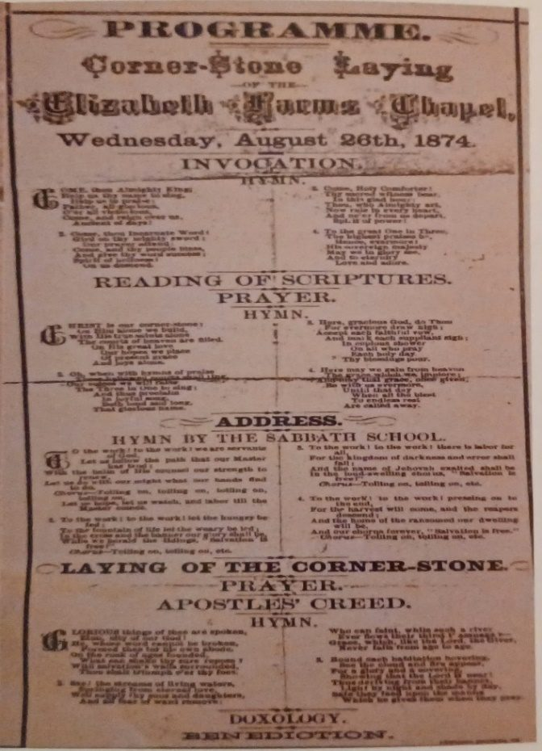
Surprise Ending
Pastor Karen Bachman provided remarks to precede the opening of the time capsule. She "confessed" to those assembled that the time capsule had already been opened several days prior, to assess its contents and prepare them for display.
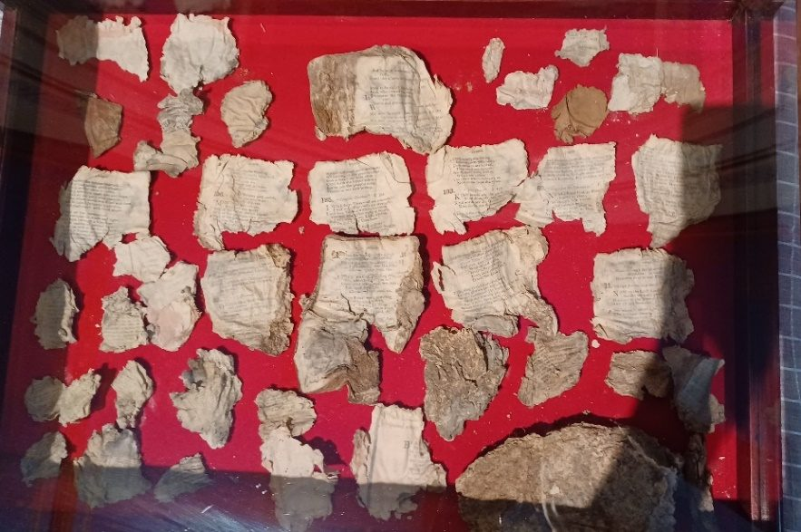
These fragments were arranged for display in a glass case. Mostly discernible were selections from a hymnal. About 15 coins were displayed in a similar case, along with the now-empty leaden box.
Rev. Bachman said that over the next few weeks the congregation would deliberate what items they wished placed back into the cornerstone for another 150 years. Stay tuned!
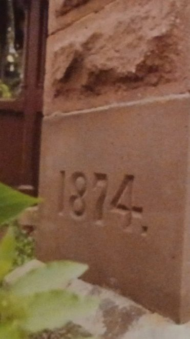
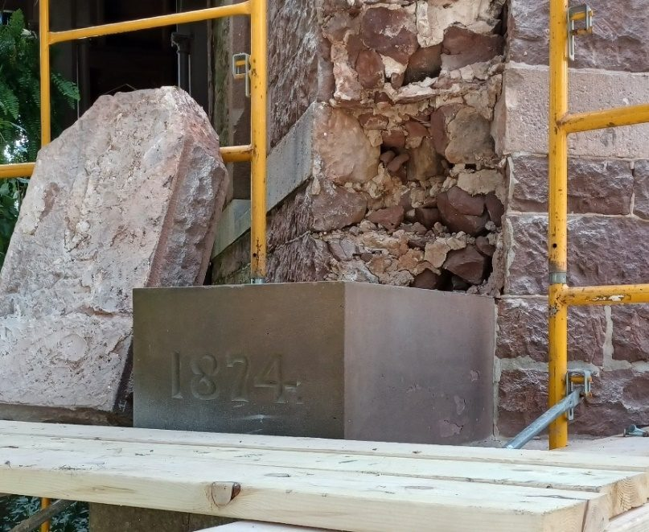
A 34-page commemorative booklet was featured at the event; copies are still available for purchase at Coleman Memorial Chapel.
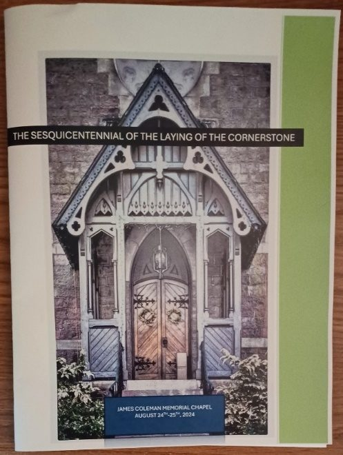
Touring the Grounds of Historic Elizabeth Furnace
On Sunday a large crowd turned out at Elizabeth Furnace to attend three lectures held in the stable venue and to tour the historic grounds. Featured on the grounds were tours of the first floor of the private mansion, opened on this special occasion.
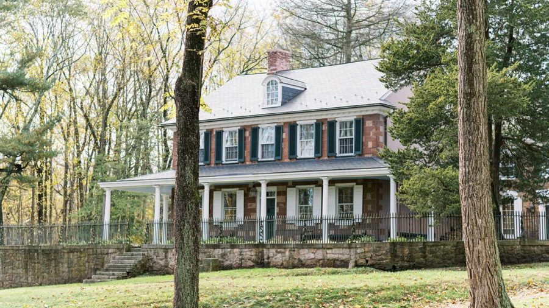
James Polczynski, author of "Souls of Iron" (2022), spoke on the history of the Coleman family and their iron dynasty. Dan Snyder, known for his broad historic interests in Lancaster, Manheim and Cornwall, provided details and findings of the on-going archaeological dig that has been in progress on the grounds for the last 20 years. Lititz historian Cory Van Brookhoven provided an entertaining presentation, "Mysterious Lititz Ghosts, True Crime, UFOs and More."
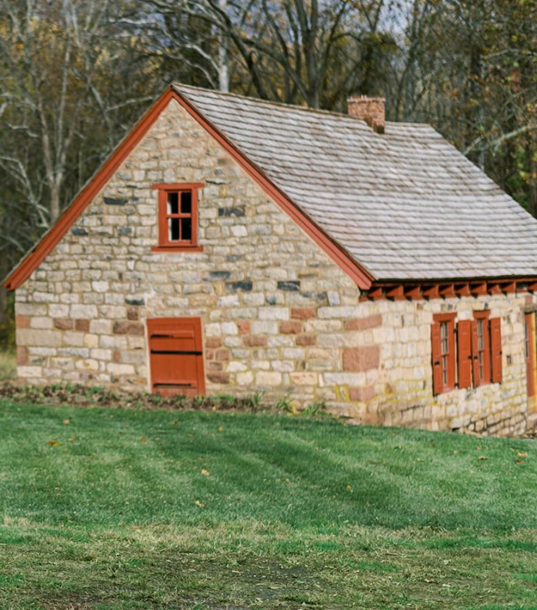
Today the Coleman Memorial Chapel has an active congregation that holds weekly Sunday worship services, special events like a car show and Christmas bazaar, and several fund raisers throughout the year. The Christmas candlelight service is truly a walk back in time when the kerosene lanterns are lighted. Elizabeth Furnace is operated by Craig Coleman as an elegant and picturesque event and wedding venue.
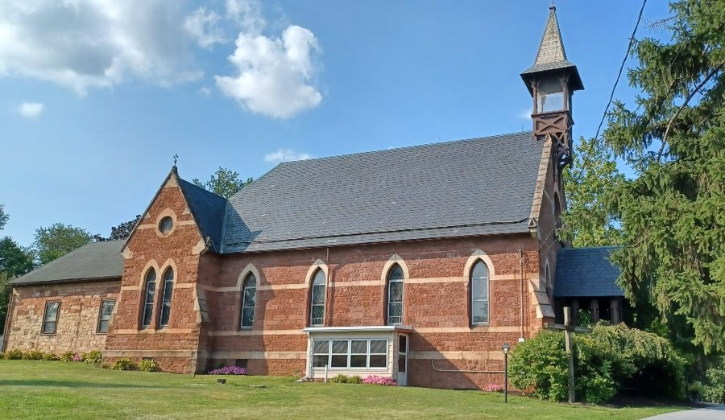
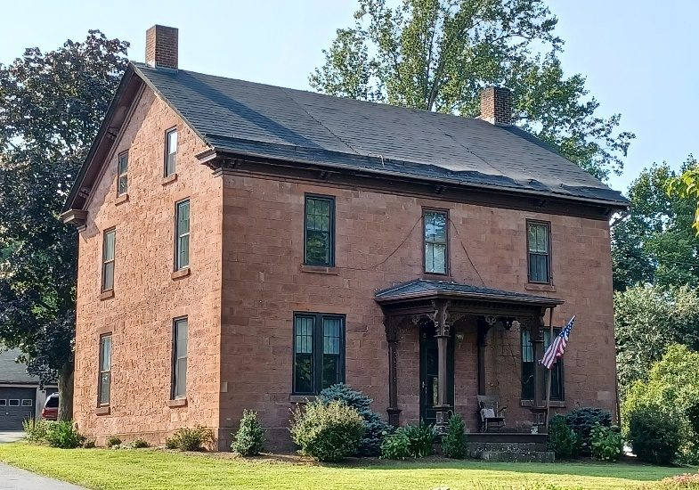
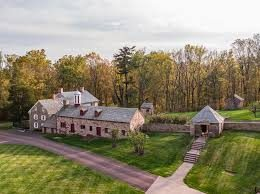
What Would You Put in a Time Capsule?
That's some planning ahead! So, what would you put into a time capsule to be left for the next 150 years? That's the question members of Coleman Memorial Chapel wrestled with in the three weeks following their 150th anniversary celebration.
Given the Coleman history of the 19th century and how things have changed since then, we can only wonder, "what property, structures and people will even exist 150 years from now?" What documents and trinkets will give a meaningful sense of what kind of people and culture we are?
Practically speaking, given that the paper items didn't survive 150 years, consideration was also given to how to prepare and preserve the items for this next time. Will digital media on USB drives be any more effective in surviving the coming years? Would it be better to carve memories in stone, as has been done for millennia?
Preparation and Commitment
Foremost, credit is due to the pastor and congregation of Coleman Memorial Chapel for the faith they express in themselves, in society and in their Lord that there will be something to celebrate in 2174.
On Sunday, September 15th, the congregation held a service and committed the selected items to a new metal box with a proper gasket for sealing out the elements. Items selected were some coins, an old baseball, paper accounts of the 150th anniversary, the history of James Coleman, and the marble angel baptismal font that had been created in his memory. This time the items were placed in plastic sleeves and zip-lock plastic bags. Digital backup copies of the documents were included on USB memory sticks. The new box was then placed inside the original 150-year-old lead box and soldered shut.
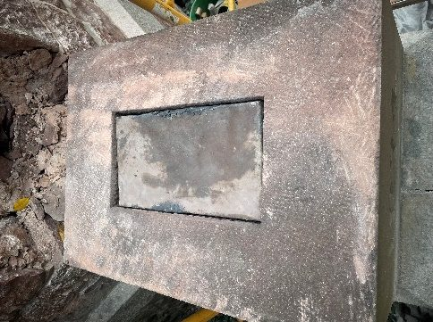
On Tuesday morning, in an informal ceremony, the box was placed back in the cornerstone and the chapel foundation was restored by stone masons.
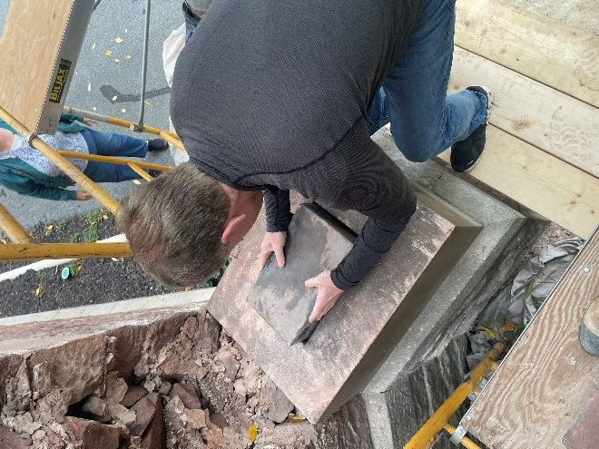
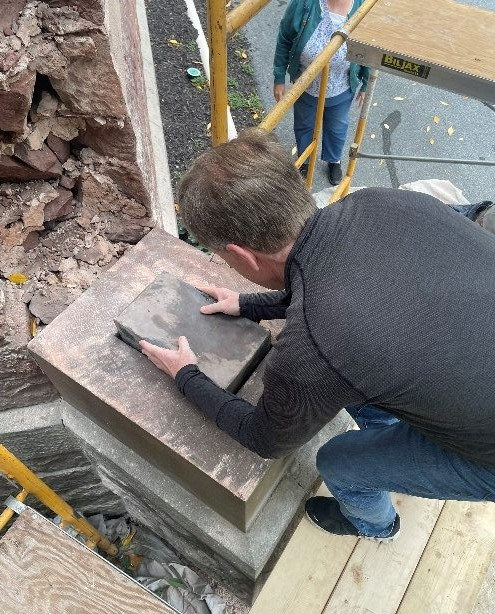
Sister Chapels and the Angel
When the Lebanon Daily News reported the laying of the first capsule in August 1874, the work of Debbie and G. Dawson Coleman was explained in great detail. Their son James had died tragically in March of 1874, and over several months' time they committed to building the chapel in his memory.
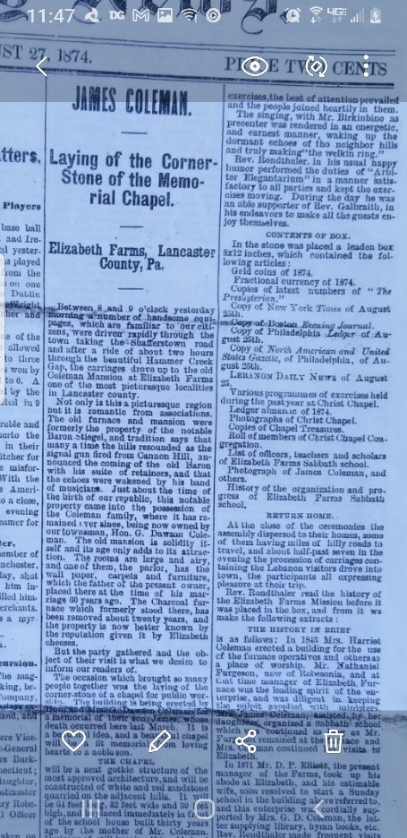
The Colemans lived on their estate "Mount Lebanon" (now known as Coleman Memorial Park on West Maple Street) near their furnaces in north Lebanon, as well as maintaining the Elizabeth furnace and farm in Brickerville.
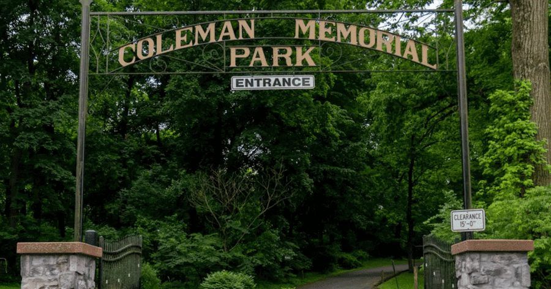
In 1856 they had begun a Sunday school for their furnace workers and families. By 1870 the school flourished and they laid the cornerstone of Christ Chapel, which in a few years became Christ Presbyterian Church.
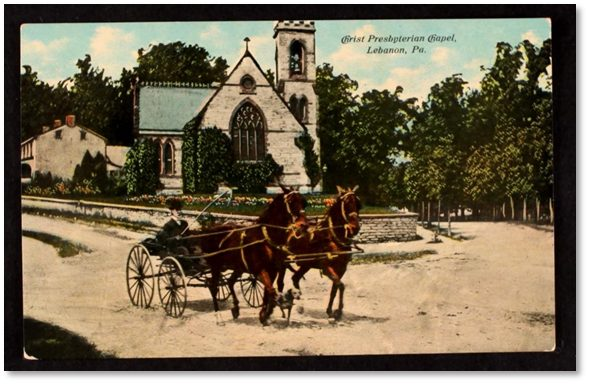
Within 36 months of its opening, the Colemans were building a new chapel in Brickerville, near the place their son had died. The exteriors of the two buildings differ in various aspects but the interior architectures seem quite similar.
The history in Brickerville shared similar characteristics with North Lebanon. According to the history in the 1874 Lebanon Daily News article, the first building had been erected in Brickerville by Mrs. Harriet Coleman (residing at Elizabeth Furnace) in 1848, for the families of the Elizabeth furnace workers as a place of worship and for Sunday school. In 1871, the year after Christ Chapel was established, this was continued by her daughter-in-law Mrs. G. D. ("Debbie") Coleman, who supplied books and hymnals from Christ Chapel. The pastor of Christ Chapel frequently made the 14-mile journey after his own services, to preach there. Members of Christ Chapel turned out in number to support the dedication of the new Memorial Chapel in 1874.
The James Coleman Angel
In addition to building the chapel in Brickerville, a few years later the Colemans commissioned a baptismal font — a marble sculpture of an angel — to adorn their own Christ Chapel in memory of their son James.
The statue, by Richard Greenough from his studio in Rome, Italy, was carved of marble from the Carrara quarries, world-famous for its pure white marble. The angel holds a shell for the baptismal font; the shell is both the symbol of the disciple James and the early Christian symbol of baptism. The base of the pedestal reads "In Memoriam." It is said that the facial features are those of James, taken from a photograph.
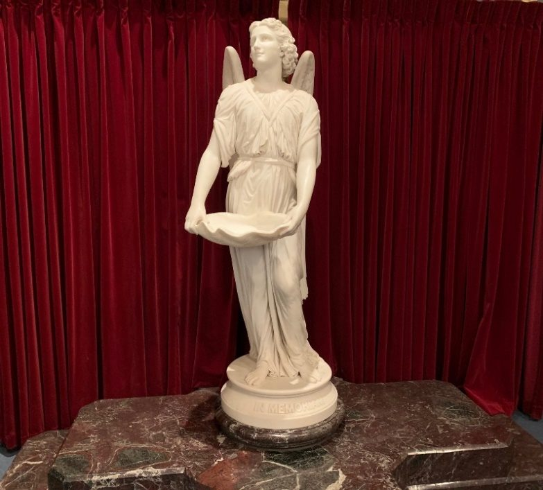
The story of the angel has taken on a life of its own. It remained a treasure of Christ Presbyterian Church for almost 140 years, until it closed its doors in 2020. The baptismal font has since been moved to St. Luke's Episcopal Church in Lebanon, and appropriately so.
The Coleman family is known for a long history of supporting many churches in greater Lebanon. George Dawson Coleman had been on the vestry of St. Luke's since 1861, helping to ensure completion of its building project in 1863. Given outstanding construction debts, the church could not be consecrated until paid for in full. The day was saved when the deficit was covered by George Dawson Coleman and his mother, Harriet Dawson Coleman.
The Angel has been temporarily placed, but according to Dr. Terry Heisey, Principal Organist and Director of Music, who provided these historical details, the Angel statue will be installed in the new glass-enclosed tower porch.

See you all in 150 years!
Thanks to Rev. Karen Bachman and the committee of Coleman Memorial Chapel, Mr. Craig Coleman for his assistance with this article, Mrs. Carol Holt of Christ Presbyterian Church, and Dr. Terry Heisey of St. Luke's Episcopal Church.
Originally published as two dispatches on LebTown, August 27 and September 18, 2024.